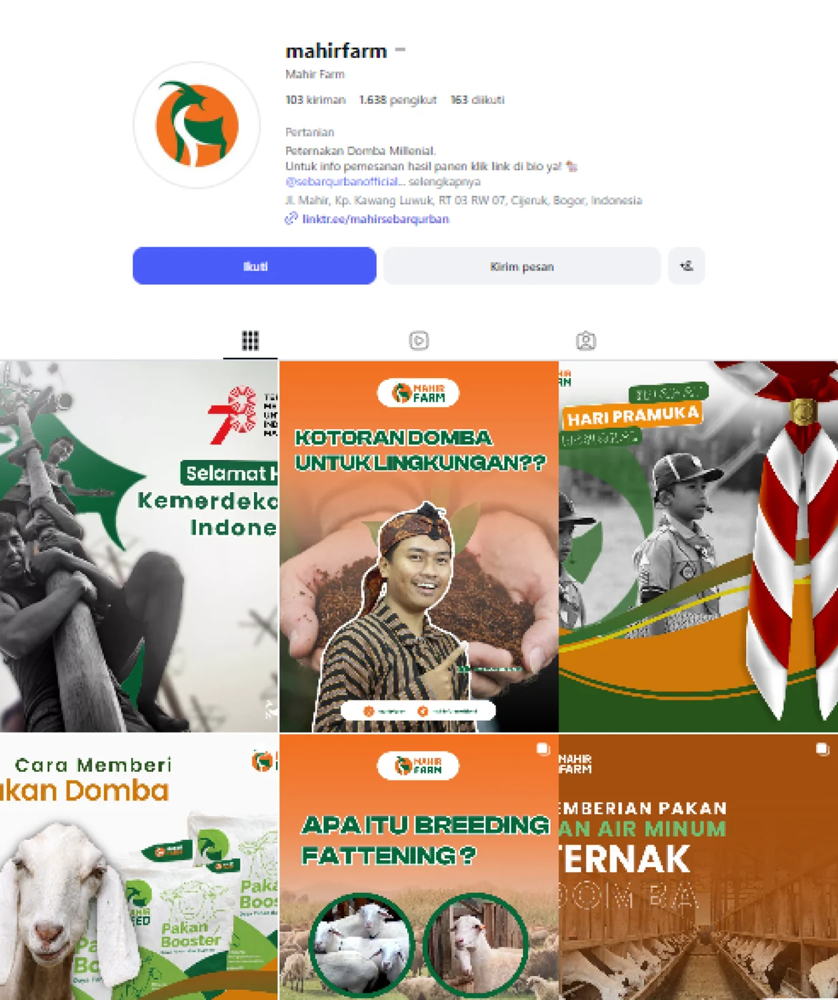
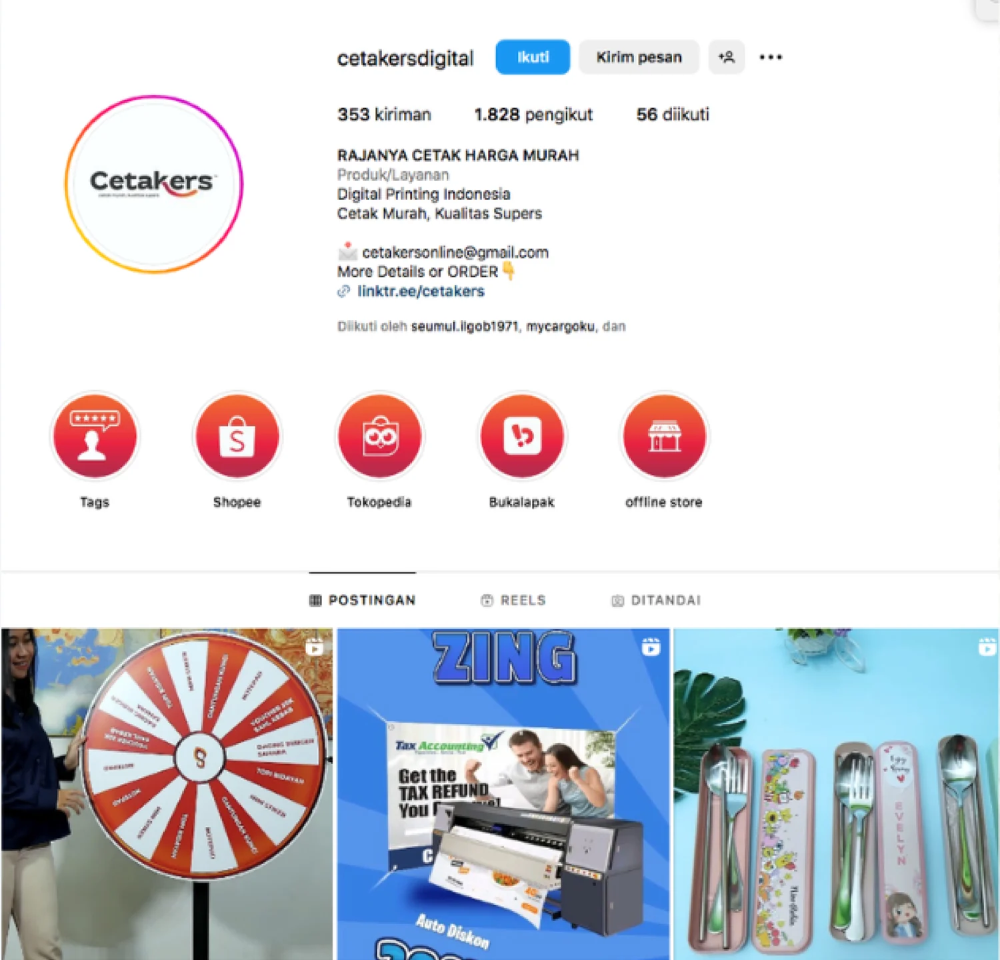
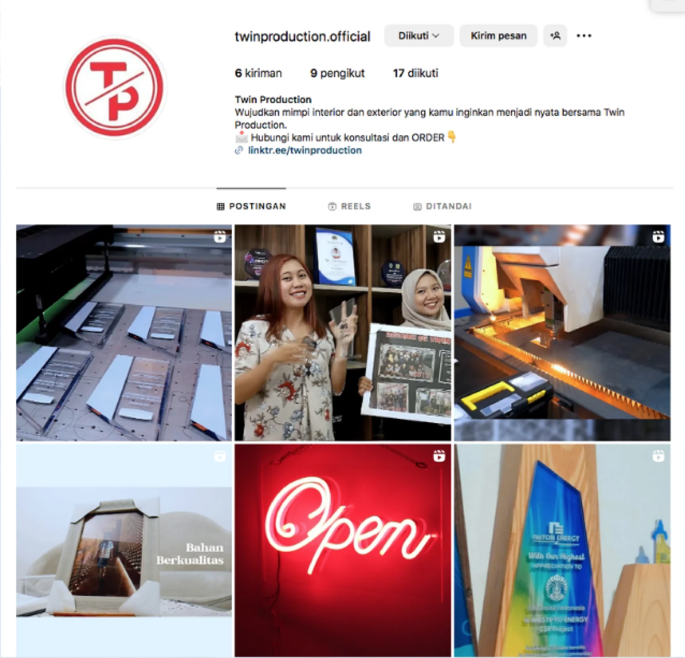
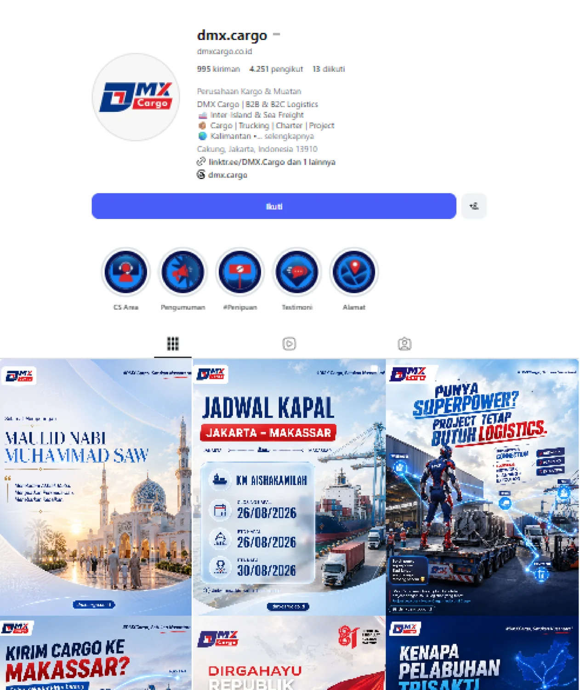

01 / ADMINISTRATION
Admin &
Operations
Mendukung proses operasional sehari-hari dengan ketelitian dalam administrasi, pengelolaan pesanan, dan layanan pelanggan.
- Administrasi pesanan
- Marketplace operations
- Customer handling
- Koordinasi pengiriman
SOCIAL MEDIA SAMPLES
Behind the posts,
the ideas that connect.
Empat brand, empat karakter. Pilihan dokumentasi akun dan materi visual yang menunjukkan bagaimana konten disesuaikan dengan kebutuhan tiap brand.
01 / INSTAGRAM CONTENT
✳Mahir Farm
@mahirfam ↗
Konten seputar peternakan dan produk dengan pendekatan informatif untuk membantu audiens memahami brand.
Content & caption02 / BRAND PROMOTION
✳Cetakers Digital
@cetakersdigital ↗
Konten promosi produk dan layanan percetakan dengan informasi yang ringkas dan visual yang langsung terbaca.
Promotion & caption03 / VISUAL CONTENT
✳Twin Production
@twinproduction.official ↗
Materi visual yang menampilkan layanan dan hasil produksi agar informasi brand mudah dikenali.
Social content04 / LOGISTICS CONTENT
✳DMX Cargo
@dmx.cargo ↗
Materi informasi dan publikasi untuk memperkenalkan layanan logistik dengan bahasa yang praktis.
Information content